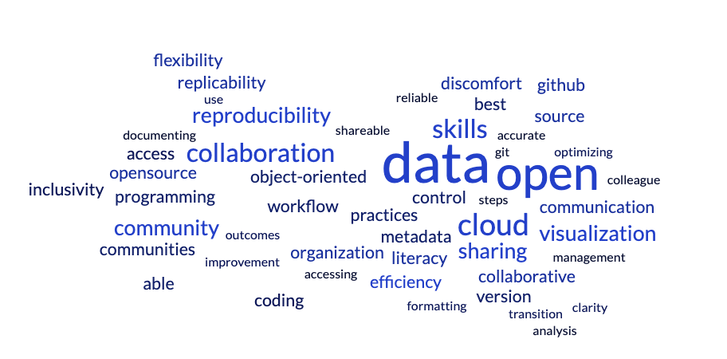

Engaging with a Cross-NASA Subcommunity
Chris Battisto ![]()
Katherine Blanchette
Alycia Crall
Elizabeth Joyner
Julie Lowndes
Sean McCartney
Erin Robinson
Kenton Ross
Cross-posted from Carpentries, Engaging with a Cross-NASA Subcommunity
In a recent Carpentries Community Session a set of three programs with Carpentries memberships within the US National Aeronautics and Space Administration (NASA) shared a bit about how they currently engage with The Carpentries. The purpose of the session was to explore opportunities to support the activities of these programs through formation of a Carpentries subcommunity. A Carpentries subcommunity is defined as “a subset of our global community that can be local, regional, domain-specific, or a group of community members sharing a common language or interests.” Anyone interested in developing an engaged network of Instructors was invited to attend the session, resulting in 56 community members representing multiple US government agencies, state governments, universities, and non-profits.
The session began with three short presentations by representatives from each of the three NASA programs, which are summarised and with the presentation slides below.
NASA Openscapes presented by Chris Battisto
Chris Battisto, a scientist at Goddard Earth Sciences Data and Information Services Center (GES DISC) Distributed Active Archive Center, introduced the NASA Openscapes project and the approach that the community uses to collaborate together to support researchers using NASA Earthdata to migrate their analytical workflows to the cloud. Openscapes is, generally, an approach and a movement that helps researchers and those supporting research find each other and feel empowered to conduct data-intensive science. Through a Carpentries membership, all mentors in the NASA Openscapes community participate in Instructor Training. In addition, NASA Openscapes uses the Carpentries modular style teaching approach and many of the pedagogical tools like live coding to teach learners using NASA Earthdata to access and analyze data in the AWS Cloud.
NASA DEVELOP presented by Sean McCartney
Sean McCartney, Senior Scientific Analyst at NASA Goddard Space Flight Center, presented on NASA DEVELOP. NASA DEVELOP is a workforce training program that places staff in teams of four to five individuals to work on projects lasting ten weeks. Through this program, participants showed strong interest in gaining more technical training in coding and image processing skills. This resulted in a partnership with The Carpentries in 2018 to host Software Carpentry workshops at NASA centers across the United States. Since that partnership began, the program has trained 30 Instructors and hosts 3 workshops a year.
NASA TOPS presented by Katherine Blanchette
Katherine Blanchette, STEM Engagement Specialist at NASA’s Ames Research Center & Armstrong Flight Research Center, presented on NASA TOPS. This program began in response to the White House’s Transform to Open Science Initiative and the identification of 2023 as the Year of Open Science. As part of this program, a curriculum has been developed that includes five modules on a range of open science topics where learners get badges for each module completed. Instructors are needed to teach these modules, and this has been facilitated through participation in Instructor Training. A modified version of Instructor Training was piloted on 27 October to support these Instructors teaching the curricula.
Opportunities for a NASA Subcommunity
From the three presentations it was clear that across NASA, these programs find real benefits leveraging The Carpentries to extend data science skills within NASA’s internal and external communities of practice. As new Instructors complete training in support of these programs, there exist opportunities to build a subcommunity through programming and resources available through The Carpentries Community Development Program.
Attendees discussed this general interest in forming a cross-NASA Carpentries subcommunity. To kick-off the discussion, Elizabeth Joyner led attendees in two rounds of 3-2-1 silent reflection where she asked participants to list three data science and coding skills that researchers and practical data users need at NASA, two questions about Carpentries subcommunities, and one metaphor or simile about what you envision for a thriving subcommunity of Carpentries Instructors. As we closed out of this discussion, clear themes emerged; attendees are interested in increasing efficiency with data, working more openly and collaboratively with data, building and maintaining reproducible workflows and increasing data fluency and dexterity with NASA data (Figure 1).

From the second part of the reflection, the questions generated by the group acted as a starting point for a lively discussion, which will hopefully continue to be good fodder for the subcommunity to develop its initial charge. There were questions about how to find additional Instructors across NASA and who might be missing from this discussion. There were also questions about how to engage NASA grantees and other stakeholders who use NASA data, as well as about how to extend the curriculum being taught and explicit pointers to Library Carpentries.
The third prompt was for a metaphor or simile of a thriving community. Some of our favourite imagery was that a thriving community is like a networked dream catcher, a bee hive, or three goats on each other’s shoulders in a trenchcoat trying to sneak in.
Following the teaching model advocated by The Carpentries, the three NASA programs have all intentionally cultivated communities that support learners and support ongoing learning. Considering this, there is general excitement about the possibility of a NASA subcommunity with 20 attendees indicating interest in joining a follow-up conversation.
How to Get Involved
If you are a member of the Carpentries community, work at NASA, and would be interested in being involved in this effort, please email community@carpentries.org. We will reach out shortly to schedule a follow-up call to this discussion. If you have interest in forming a subcommunity or have general interest in the Community Development Program, please email community@carpentries.org. You can also find information about upcoming meetings on the Etherpad.
Citation
@online{battisto2023,
author = {Battisto, Chris and Blanchette, Katherine and Crall, Alycia
and Joyner, Elizabeth and Lowndes, Julie and McCartney, Sean and
Robinson, Erin and Ross, Kenton},
title = {Engaging with a {Cross-NASA} {Subcommunity}},
date = {2023-12-06},
url = {https://openscapes.org/blog/2023-12-07-engaging-with-a-cross-nasa-subcommunity},
langid = {en}
}